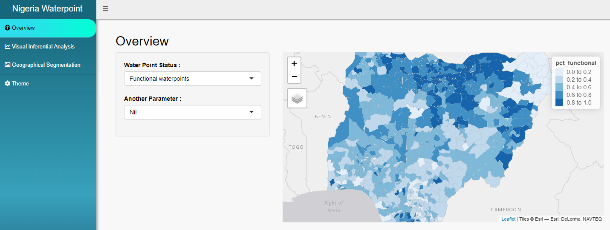
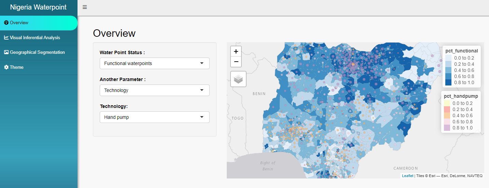
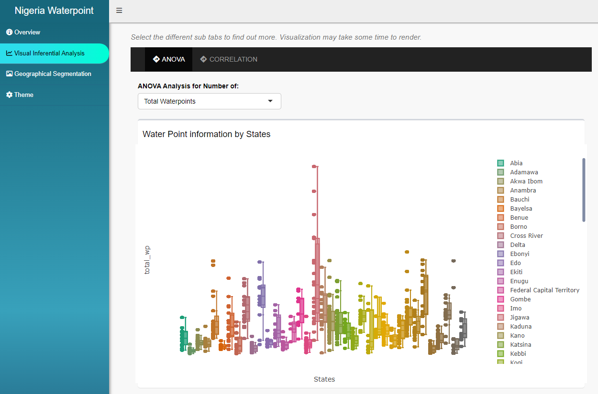
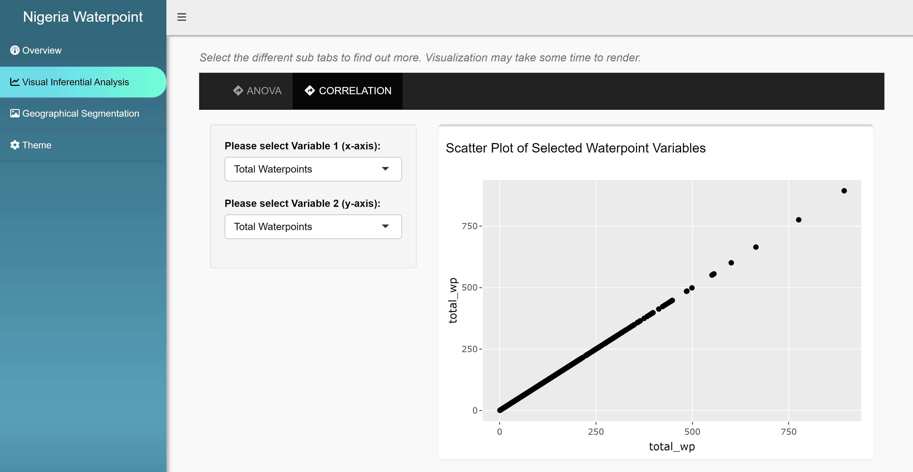
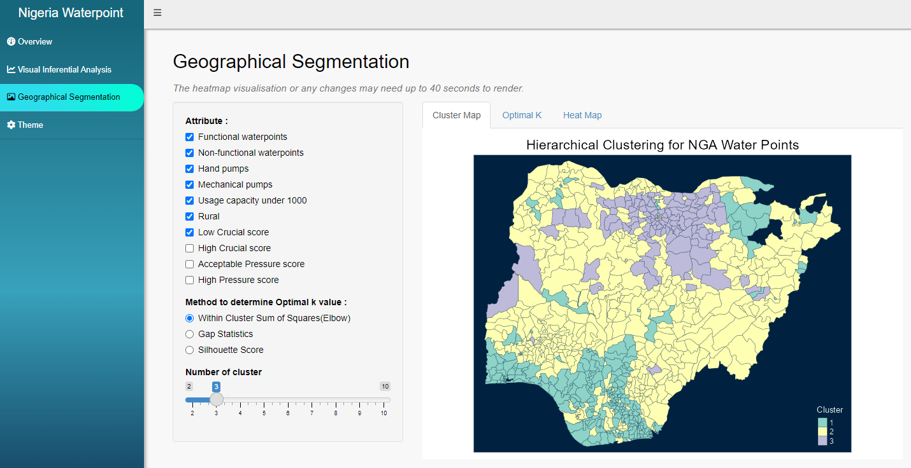
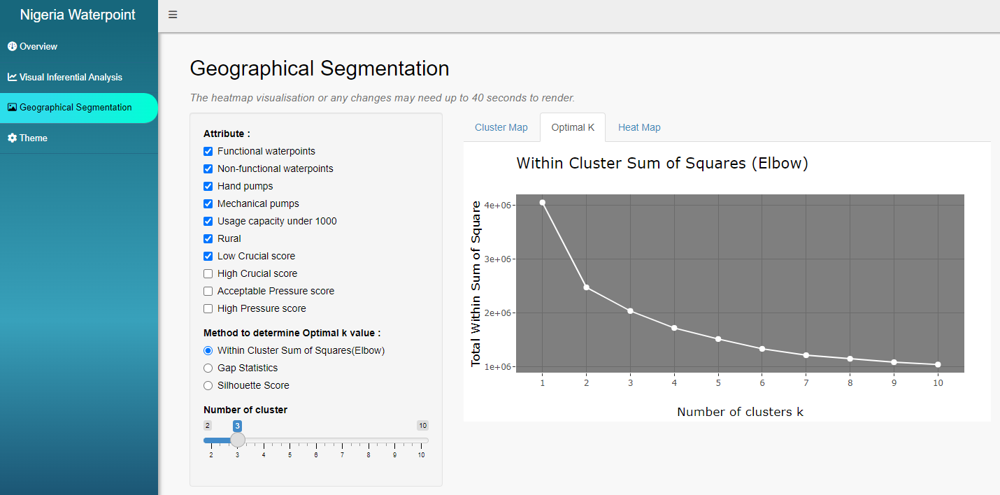
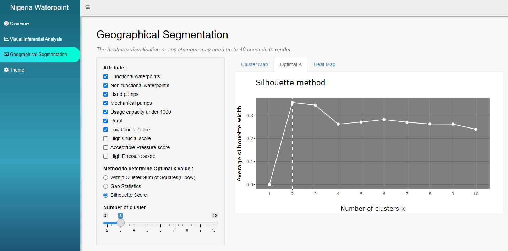
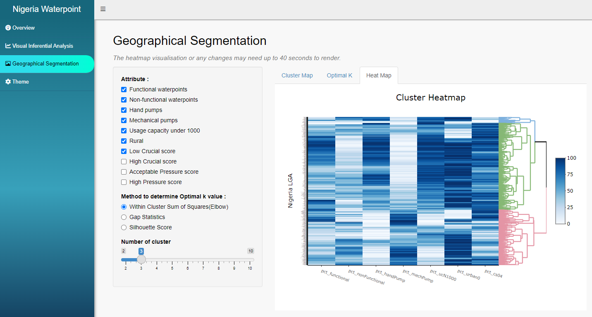

User Guide
step-by-step to visualise Nigeria Water Points
User Guide
This Waterpoint app allows users to have an overview of the distribution of water points by operational status and attributes, analyse the water points visually and segment them into various clusters to facilitate decision-making in resources management for the water points.
This app has 3 key sections : Overview, Visual Inferential Analytics and Geographical Segmentation.
Overview
Homepage > App> Overview
The key functions of this section are to facilitate users to visualise the distribution of water points at LDA2 level. The percentage of the selected status measures their distribution within a given district.

There are 3 types of statuses available :
Functional waterpoints.
Non-functional waterpoints.
Unknown waterpoints.
There are 6 key parameters available to supplement the overview of a selected status. When a parameter is selected, there will be more associated attributes available to choose. The attributes descriptions are listed below :

Water source, refers to the 2 major types of water sources available for most of the water points in Nigeria. There are 2 options available :
Spring
Well
Technology, refers to the deployed equipment to supply water resources to the surrounding communities. There are 2 options available :
Hand Pump, shows the percentage of water points equipped with manual equipment.
Mechanical Pump, shows the percentage of water points with equipment that operated with minimal human involvement.
Pressure Score, measures the utilisation level of the water points. This is done by measuring the ratio of the population within 1 km radius of the water points and by the usage capacity limit thereof. There are 2 options available :
Acceptable Pressure Score, are the water points that are not over-supporting the population within 1 km radius.
High Pressure Score, are the water points that have breached their usage capacity limit. Urgent attention and resources are required to upgrade or maintain the water points to sustain the rural community’s growth.
Crucial Score, measures the crucial level of the water points for the populations within 1 km radius. There are 2 options available :
Low Crucial Score, are the water points with score below 0.4, generally supporting less than half of the population within 1 km radius.
High Crucial Score, are the water points with score above 0.4, which may indicate they are supporting more than half of the population, with some of them supporting almost the entire population.
Capacity, refers to the limit of the population water points can support. Generally, these limits are categorised into 5 main categories, namely 50, 250, 300, 500 and 1000. For this app, we group all the capacity categories below 1000 as 1 attribute to identify which area requires more resources to maintain or upgrade.
Low Capacity, including all the usage capacity limits below 1000.
High Capacity, refers are the water points with usage capacity limit 1000.
Community, this parameter that indicates the percentage of water points falls within ‘Urban’ or ‘Rural’ community.
Visual Inferential Analysis
Homepage > App > Visual Inferential Analysis
The key functions of this section are to allow users to visually analyse variances (ANOVA) and correlations of various attributes across different states.
The following are the key functions :

Visually analyse variances
This tab allows users to visually analyse the variances by state based on the selected attribute.
There are 19 attributes available :
3 options for water points options to select from “Total Waterpoints”, “Functional waterpoints” and “Non-functional Water Points”.
3 options for Technology parameter : “Handpumps”, “Mechanical Pumps” and “Tap Stands”.
5 options for Capacity parameter : “Usage Capacity 50”, “Usage Capacity 250”, “Usage Capacity 300”, “Usage Capacity 1000” and “Usage Capacity below 1000”.
2 options for Community parameter : “Urban” and “Rural” communities.
2 options for Crucial Score parameter : “Low Crucial Score” and “High Crucial Score”.
4 options for Pressure Score parameter : “Pressure Score below 0.9”, “above 0.9 but below 1.9”, “above 1.9, below 3.9”, and “above 3.9”.
- Correlation Analysis

This tab, CORRELATION, allows users to visually explore the correlation strength between two attributes by selecting the attributes for Variable 1 and 2.
Geographical Segmentation
Homepage > App > Geographical Segmentation
The key functions of this section is to allow users to perform Hierarchical Clustering geospatial analysis based on selected attributes.
The following are the key functions :
- Geospatial Clustering Analysis

This tab, Cluster Map, displays the geographical segmentation based on the Hierarchical Clustering algorithm. The output will be based on minimum 3 selected attributes and the optimal default number of clusters, i.e. 3.
Users can glide the “Number of Cluster” to adjust the clustering output.
For app launching version :
The clustering analysis currently only supports 10 attributes. We will gradually release more attributes in subsequent app updates. Do reach out to us if you have any attributes in mind you would like to include in your geospatial analysis.
The number of clusters is limited to 10.
- Determine Optimal K value

This tab, Optimal K, displays the chart to facilitate users in identifying the optimal default number of clusters, K, for the clustering analysis. There are 3 methods available, namely Elbow, Gap Statistics and Silhouette Score, to compare the K-values.

Note : Subject to devices, it may take up to 40 seconds to render the output when changing the method option.
- Visual Analytics with Heatmap

This tab, Heatmap, allows users to visually analyse the attributes’ performances across the identified segments, as shown by the dendrogram on the right.